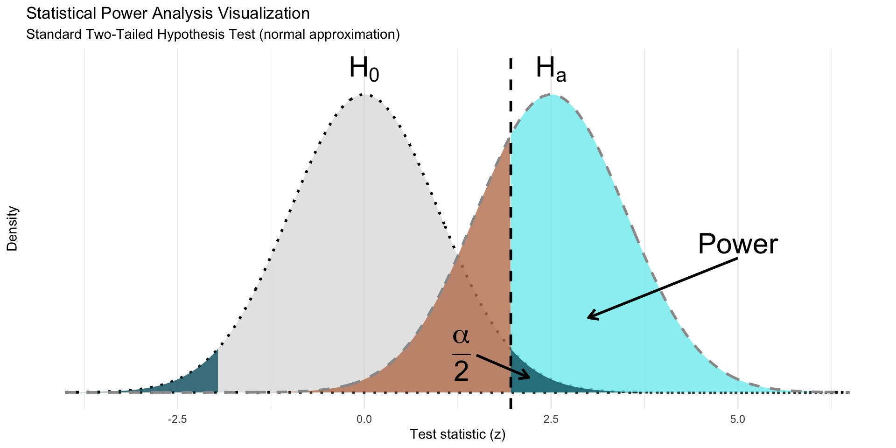

Code
library(tidyverse)
library(dplyr)
library(ggplot2)
library(gt)
library(knitr)
# =============================================================================
# SIMULATION PARAMETERS
# =============================================================================
# Study design parameters
sample_size_per_group <- 50
num_simulations <- 10000
confidence_level <- 0.95
alpha_level <- 0.05
# Effect size parameters
null_effect_size <- 0
alternative_effect_size <- 0.5
# =============================================================================
# THEORETICAL DISTRIBUTION PARAMETERS
# =============================================================================
# Calculate standard error and degrees of freedom
standard_error <- sqrt((1^2 + 1^2) / sample_size_per_group)
degrees_freedom <- 2 * sample_size_per_group - 2
# Distribution parameters for null and alternative hypotheses
mu_null <- null_effect_size / standard_error # Mean under H0
sigma_null <- 1 # SD under H0
mu_alternative <- alternative_effect_size / standard_error # Mean under HA
sigma_alternative <- 1 # SD under HA
# Critical value for hypothesis test (two-tailed)
critical_value <- qnorm(1 - (alpha_level / 2), mu_null, sigma_null)
# =============================================================================
# CREATE THEORETICAL DISTRIBUTION CURVES
# =============================================================================
# Define plot range (4 standard deviations from means)
plot_range_multiplier <- 4
x_min_null <- mu_null - sigma_null * plot_range_multiplier
x_max_null <- mu_null + sigma_null * plot_range_multiplier
x_min_alt <- mu_alternative - sigma_alternative * plot_range_multiplier
x_max_alt <- mu_alternative + sigma_alternative * plot_range_multiplier
# Create x-axis sequence for plotting
x_values <- seq(min(x_min_null, x_min_alt), max(x_max_null, x_max_alt), 0.01)
# Generate theoretical distributions
density_null <- dnorm(x_values, mu_null, sigma_null)
density_alternative <- dnorm(x_values, mu_alternative, sigma_alternative)
# Create data frames for plotting
df_null_hypothesis <- data.frame(x = x_values, y = density_null)
df_alternative_hypothesis <- data.frame(x = x_values, y = density_alternative)
# =============================================================================
# CREATE POLYGONS FOR STATISTICAL REGIONS
# =============================================================================
# Alpha region polygon (Type I error)
alpha_polygon_data <- data.frame(
x = x_values,
y = pmin(density_null, density_alternative)
)
alpha_polygon_data <- alpha_polygon_data[
alpha_polygon_data$x >= critical_value,
]
alpha_polygon_data <- rbind(
c(critical_value, 0),
c(critical_value, dnorm(critical_value, mu_null, sigma_null)),
alpha_polygon_data
)
# Beta region polygon (Type II error)
beta_polygon_data <- df_alternative_hypothesis
beta_polygon_data <- beta_polygon_data[beta_polygon_data$x <= critical_value, ]
beta_polygon_data <- rbind(beta_polygon_data, c(critical_value, 0))
# Power region polygon (1 - beta)
power_polygon_data <- df_alternative_hypothesis
power_polygon_data <- power_polygon_data[
power_polygon_data$x >= critical_value,
]
power_polygon_data <- rbind(power_polygon_data, c(critical_value, 0))
# =============================================================================
# COMBINE POLYGONS FOR PLOTTING
# =============================================================================
# Add polygon identifiers
alpha_polygon_data$region_type <- "alpha"
beta_polygon_data$region_type <- "beta"
power_polygon_data$region_type <- "power"
# Create second alpha region (mirrored)
alpha_polygon_mirrored <- alpha_polygon_data |>
mutate(x = -1 * x, region_type = "alpha_mirrored") |>
filter(x >= min(x_values))
# Combine all polygon data
all_polygons <- rbind(
alpha_polygon_data,
alpha_polygon_mirrored,
beta_polygon_data,
power_polygon_data
)
# Convert to factor with proper labels
all_polygons$region_type <- factor(
all_polygons$region_type,
levels = c("power", "beta", "alpha", "alpha_mirrored"),
labels = c("power", "beta", "alpha", "alpha2")
)
# =============================================================================
# DEFINE COLOR PALETTE
# =============================================================================
# Color palette for the visualization
PALETTE <- list( # nolint: object_name_linter
# Hypothesis colors
hypothesis = c(
"H0" = "black",
"HA" = "#981e0b"
),
# Statistical region colors
regions = c(
"alpha" = "#0d6374",
"alpha2" = "#0d6374",
"beta" = "#be805e",
"power" = "#7cecee"
),
# Simulation curve colors
simulations = c(
"null" = "green",
"alternative" = "red"
)
)
# =============================================================================
# CREATE POWER ANALYSIS VISUALIZATION
# =============================================================================
power_plot <- ggplot(
all_polygons,
aes(x, y, fill = region_type, group = region_type)
) +
# Add filled polygons for statistical regions
geom_polygon(
data = df_null_hypothesis,
aes(
x, y,
color = "H0",
group = NULL,
fill = NULL
),
linetype = "dotted",
fill = "gray80",
linewidth = 1,
alpha = 0.5,
show.legend = FALSE
) +
geom_polygon(show.legend = FALSE, alpha = 0.8) +
geom_line(
data = df_alternative_hypothesis,
aes(x, y, color = "HA", group = NULL, fill = NULL),
linewidth = 1,
linetype = "dashed",
color = "gray60",
inherit.aes = FALSE
) +
# Add critical value line
geom_vline(
xintercept = critical_value, linewidth = 1,
linetype = "dashed"
) +
# Add annotations
annotate(
"segment",
x = 1.5,
xend = 2.2,
y = 0.05,
yend = 0.02,
arrow = arrow(length = unit(0.3, "cm")), linewidth = 1
) +
annotate(
"text",
label = "frac(alpha,2)",
x = 1.3, y = 0.05,
parse = TRUE, size = 8
) +
annotate(
"segment",
x = 5,
xend = 3,
y = 0.18,
yend = 0.1,
arrow = arrow(length = unit(0.3, "cm")), linewidth = 1
) +
annotate(
"text",
label = "Power",
x = 5, y = 0.2,
parse = TRUE, size = 8
) +
annotate(
"text",
label = "H[0]",
x = mu_null,
y = dnorm(mu_null, mu_null, sigma_null),
vjust = -0.5,
parse = TRUE, size = 8
) +
annotate(
"text",
label = "H[a]",
x = mu_alternative,
y = dnorm(mu_null, mu_null, sigma_null),
vjust = -0.5,
parse = TRUE, size = 8
) +
# Customize colors and styling
scale_color_manual(
"Hypothesis",
values = PALETTE$hypothesis
) +
scale_fill_manual(
"Statistical Region",
values = PALETTE$regions
) +
labs(
x = "Test statistic (z)",
y = "Density",
title = "Statistical Power Analysis Visualization",
subtitle = "Standard Two-Tailed Hypothesis Test (normal approximation)"
) +
ylim(c(0, max(dnorm(mu_null, mu_null, sigma_null) * 1.1))) +
theme_minimal() +
theme(
panel.grid.minor.y = element_blank(),
panel.grid.major.y = element_blank(),
axis.text.y = element_blank()
)
# Display the plot
print(power_plot)